The autocorrelation between samples drops substantially for a lag of 20 iterations. We can thin the trace to reduce the autocorrelation.
The autocorrelation between samples drops substantially for a lag of 20 iterations. We can thin the trace to reduce the autocorrelation.Here is an example of possible answers to the practical on fitting the deterministic SEITL model to the Tristan da Cunha outbreak.
Each section below correspond to a section of the practical. Thus, you can have a look at our example for one section and then go back to the practical to answer the following sections.
Although our example refers to the SEITL model, the same commands work for the SEIT2L model (i.e. example(SEIT2L_deterministic) instead of example(SEITL_deterministic)).
# the fitmodel
example(SEITL_deterministic)
# wrapper for posterior
my_posteriorTdC <- function(theta) {
my_fitmodel <- SEITL_deter
my_init.state <- c(S = 279, E = 0, I = 2, T = 3, L = 0, Inc = 0)
# note that for the SEIT2L model there are two state variables for the T
# compartment my_init.state <-
# c('S'=279,'E'=0,'I'=2,'T1'=3,'T2'=0,'L'=0,'Inc'=0)
return(logPosterior(fitmodel = my_fitmodel, theta = theta, init.state = my_init.state,
data = FluTdC1971, margLogLike = trajLogLike))
}
# theta to initialise the MCMC
init.theta <- c(R0 = 2, D.lat = 2, D.inf = 2, alpha = 0.8, D.imm = 16, rho = 0.85)
# diagonal elements of the covariance matrix for the Gaussian proposal
proposal.sd <- c(R0 = 1, D.lat = 0.5, D.inf = 0.5, alpha = 0.1, D.imm = 2, rho = 0.1)
# lower and upper limits of each parameter
lower <- c(R0 = 0, D.lat = 0, D.inf = 0, alpha = 0, D.imm = 0, rho = 0)
upper <- c(R0 = Inf, D.lat = Inf, D.inf = Inf, alpha = 1, D.imm = Inf, rho = 1)
# number of iterations for the MCMC
n.iterations <- 5000
# additional parameters for the adaptive MCMC, see ?mcmcMH for more details
adapt.size.start <- 100
adapt.size.cooling <- 0.999
adapt.shape.start <- 200You can now go back to the practical and try to run a MCMC with those settings.
If you didn't manage to run a MCMC, or it took too long to obtain a few thousand iterations, you can load our short-run as follows:
data(mcmc_TdC_deter_shortRun)
# this should load 2 objects in your environment: mcmc_SEITL and
# mcmc_SEIT2L. Each one is a list of 3 elements returned by mcmcMH
names(mcmc_SEITL)
## [1] "trace" "acceptance.rate" "covmat.empirical"
# the trace contains 9 variables for 5000 iterations
dim(mcmc_SEITL$trace)
## [1] 5001 9
# let's have a look at it
head(mcmc_SEITL$trace)
## R0 D.lat D.inf alpha D.imm rho log.prior log.likelihood
## 1 2.000 2.000 2.0000 0.8000 16.00 0.8500 -12.81 -445.8
## 2 2.000 2.000 2.0000 0.8000 16.00 0.8500 -12.81 -445.8
## 3 2.078 2.479 1.3236 0.7551 15.35 0.9017 -12.81 -418.2
## 4 2.078 2.479 1.3236 0.7551 15.35 0.9017 -12.81 -418.2
## 5 2.820 2.262 1.5136 0.6892 16.45 0.7989 -12.81 -391.5
## 6 3.846 2.449 0.3711 0.6083 15.82 0.6544 -12.81 -283.3
## log.posterior
## 1 -458.6
## 2 -458.6
## 3 -431.0
## 4 -431.0
## 5 -404.3
## 6 -296.1You can now go back to the practical and analyse this trace.
Here is an example of analysis for our preliminary run:
# convert to a mcmc object for coda
trace <- mcmc(mcmc_SEITL$trace)
# compute the acceptance rate
1 - rejectionRate(trace)
## R0 D.lat D.inf alpha D.imm
## 0.1704 0.1704 0.1704 0.1704 0.1704
## rho log.prior log.likelihood log.posterior
## 0.1704 0.0000 0.1704 0.1704
# between 0.1 and 0.6: looks good!
# let's have a look at the traces
xyplot(x = trace)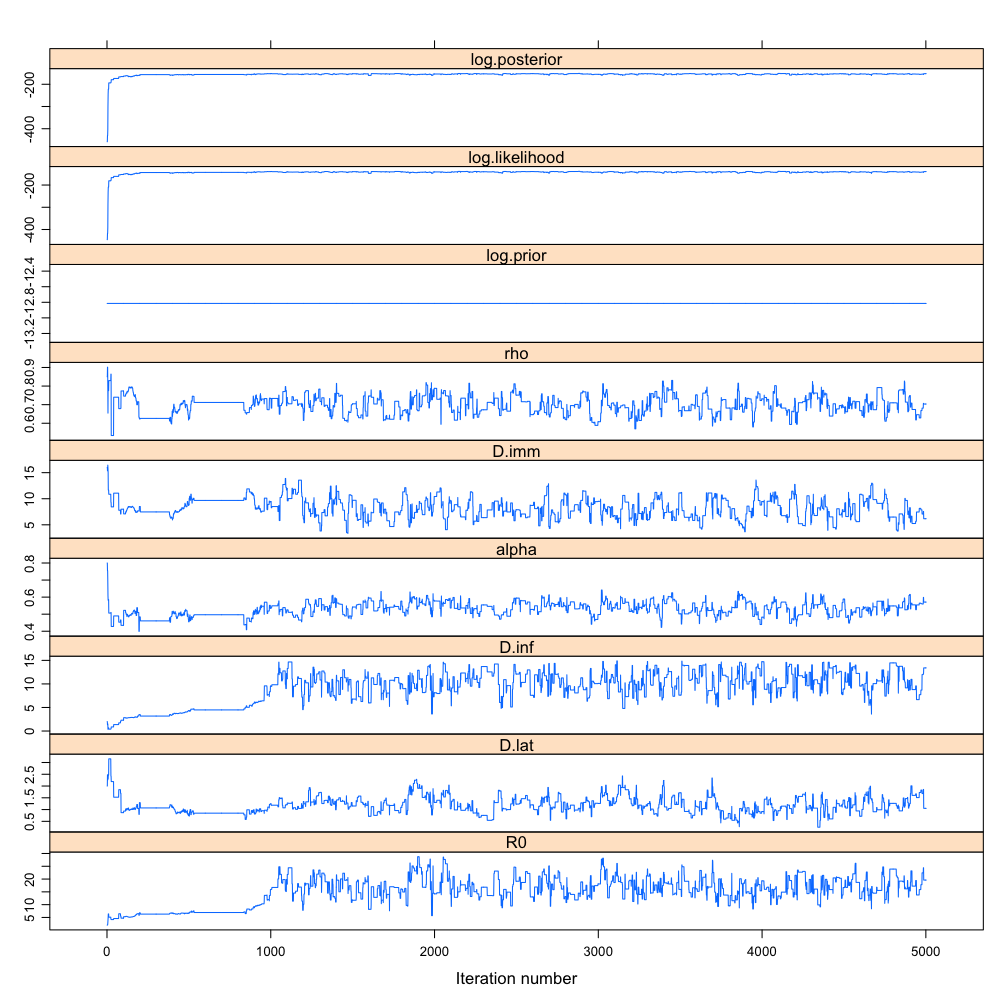
Although the chain was started at a init.theta with a low posterior density, it quickly finds the region of the parameter space with high posterior density. Note also the constant trace of the log-prior since we have assumed a uniform prior.
Overall, it looks like the chain reached its target distribution after 1000 steps.
# Let's find a suitable burning:
plotESSBurn(trace)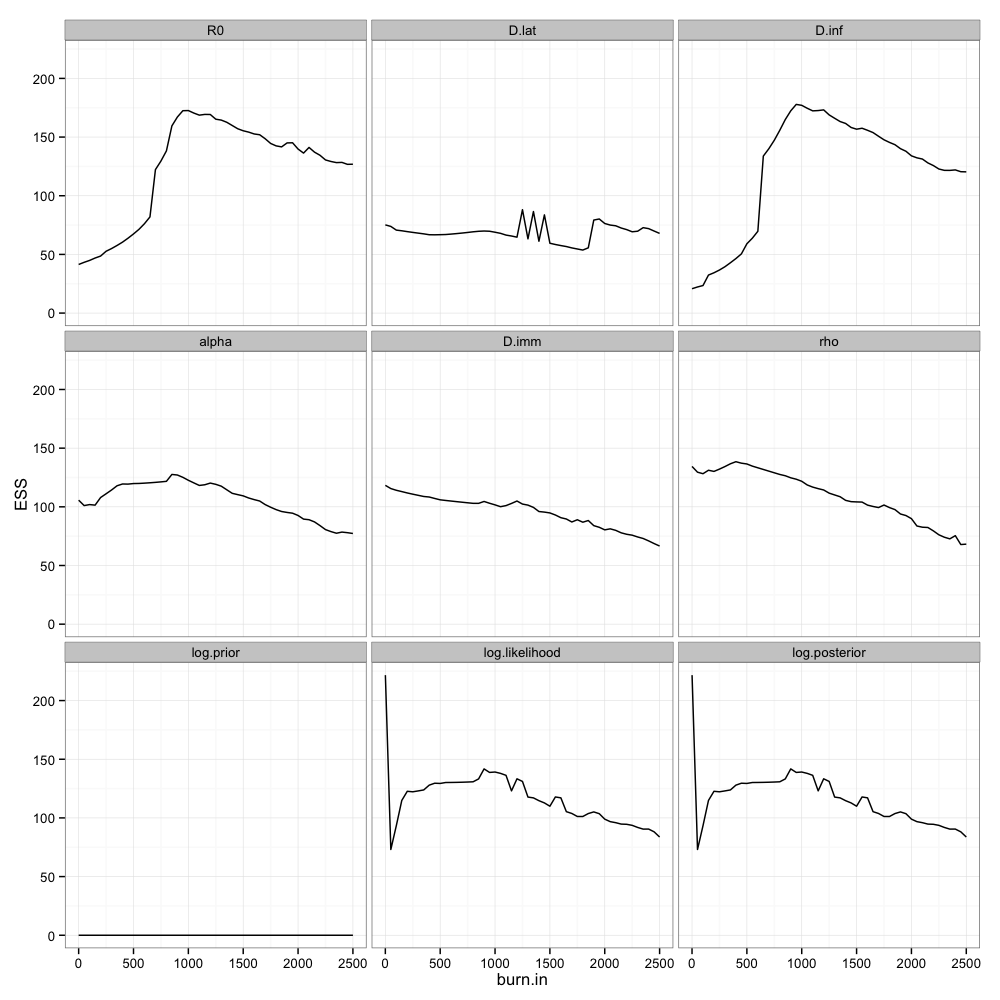
As anticipated from the trace, burning the first 1000 iterations maximizes the effective sample size (ESS).
# Let's create a new trace without the burning
trace.burn <- burnAndThin(trace, burn = 1000)
xyplot(x = trace.burn)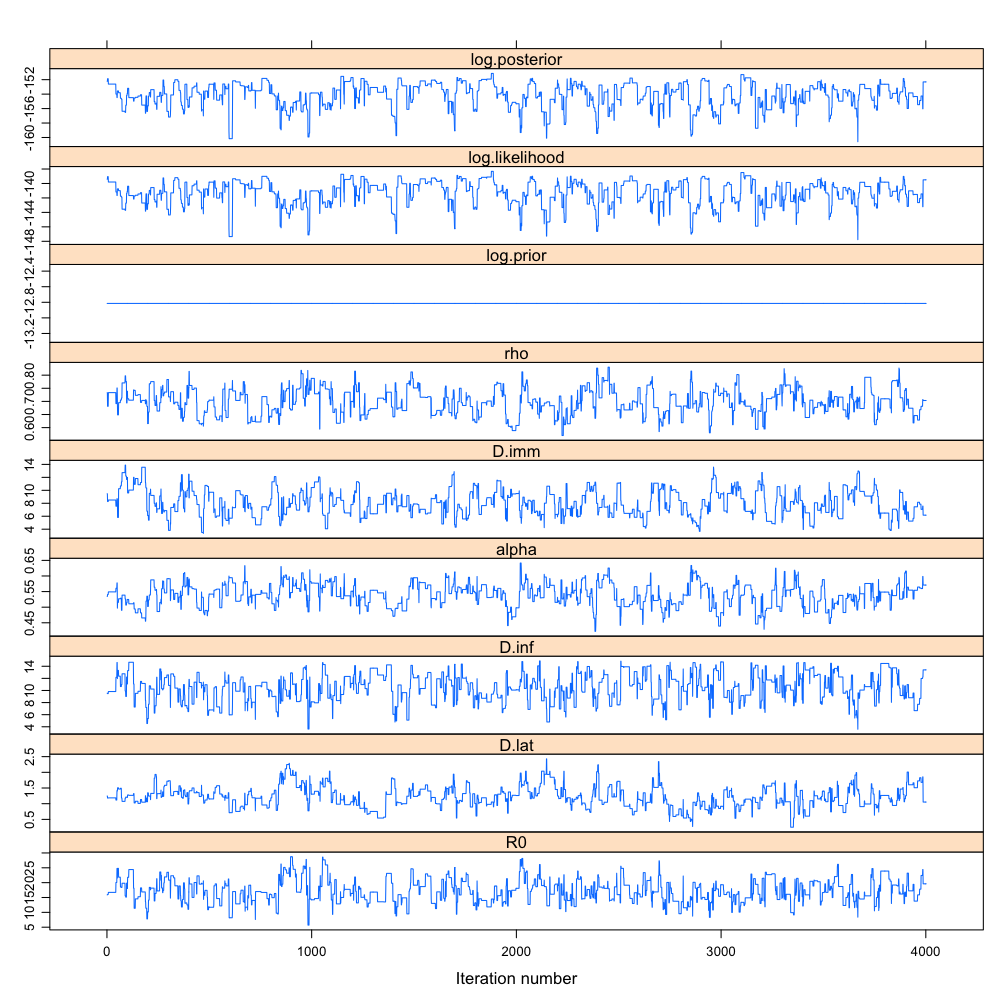
# Let's check the ESS
effectiveSize(trace.burn)
## R0 D.lat D.inf alpha D.imm
## 172.59 68.91 177.06 122.62 101.67
## rho log.prior log.likelihood log.posterior
## 121.78 0.00 139.10 139.10Although we have 4000 samples remaining after burning, the ESS is much smaller. This is due to autocorrelation of the chain.
# autocorrelation plot
acfplot(x = trace.burn, lag.max = 60) The autocorrelation between samples drops substantially for a lag of 20 iterations. We can thin the trace to reduce the autocorrelation.
# Let's create a thinned trace
trace.burn.thin <- burnAndThin(trace.burn, thin = 20)
xyplot(x = trace.burn.thin)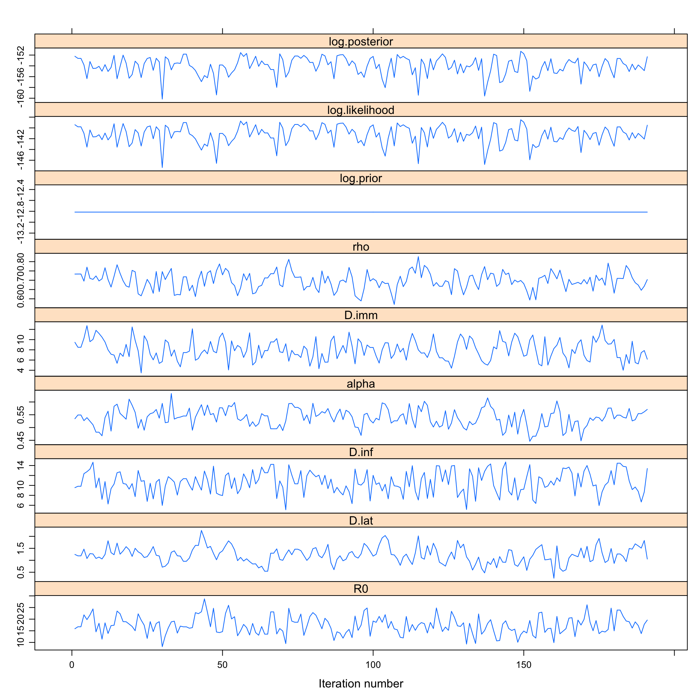
# Let's check the ESS
effectiveSize(trace.burn.thin)
## R0 D.lat D.inf alpha D.imm
## 131.27 66.87 191.00 86.83 112.46
## rho log.prior log.likelihood log.posterior
## 96.41 0.00 137.34 137.34Although the thinned trace has 20 times less samples than the unthinned trace, it has a similar ESS. This is because the autocorrelation has been reduced.
# new autocorrelation plot
acfplot(x = trace.burn.thin, lag.max = 60)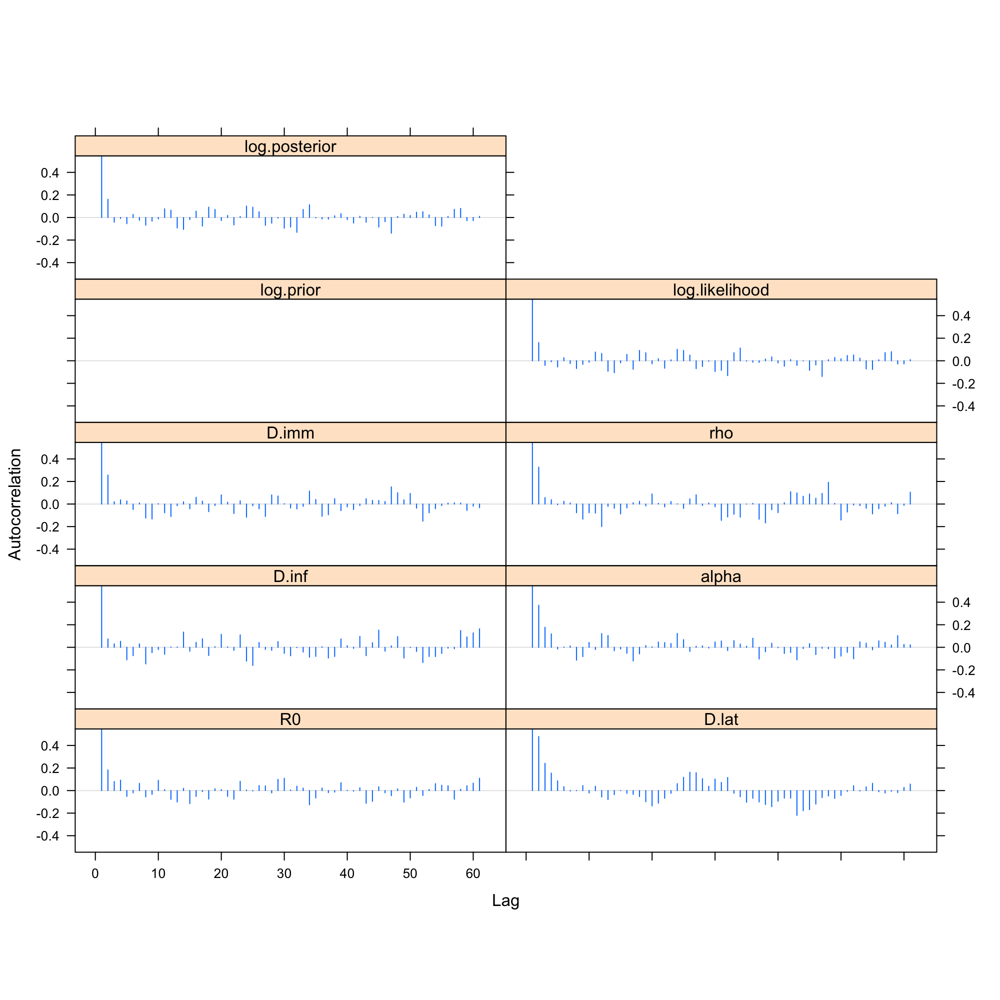
Let's compare the posterior estimates of the thinned and unthinned traces.
summary(trace.burn)
##
## Iterations = 1:4001
## Thinning interval = 1
## Number of chains = 1
## Sample size per chain = 4001
##
## 1. Empirical mean and standard deviation for each variable,
## plus standard error of the mean:
##
## Mean SD Naive SE Time-series SE
## R0 17.240 3.8608 0.061036 0.29387
## D.lat 1.217 0.3368 0.005325 0.04058
## D.inf 10.527 2.2755 0.035975 0.17101
## alpha 0.539 0.0363 0.000574 0.00328
## D.imm 8.069 1.9709 0.031159 0.19547
## rho 0.700 0.0490 0.000774 0.00444
## log.prior -12.814 0.0000 0.000000 0.00000
## log.likelihood -141.284 1.6895 0.026711 0.14325
## log.posterior -154.099 1.6895 0.026711 0.14325
##
## 2. Quantiles for each variable:
##
## 2.5% 25% 50% 75% 97.5%
## R0 9.897 14.488 16.870 19.586 24.813
## D.lat 0.571 0.995 1.189 1.423 1.941
## D.inf 5.974 8.886 10.605 12.226 14.463
## alpha 0.468 0.515 0.541 0.565 0.604
## D.imm 4.488 6.522 7.892 9.520 12.004
## rho 0.608 0.667 0.699 0.735 0.792
## log.prior -12.814 -12.814 -12.814 -12.814 -12.814
## log.likelihood -145.325 -142.328 -141.006 -139.928 -138.966
## log.posterior -158.140 -155.143 -153.821 -152.743 -151.781
summary(trace.burn.thin)
##
## Iterations = 1:191
## Thinning interval = 1
## Number of chains = 1
## Sample size per chain = 191
##
## 1. Empirical mean and standard deviation for each variable,
## plus standard error of the mean:
##
## Mean SD Naive SE Time-series SE
## R0 17.399 3.8542 0.27888 0.33640
## D.lat 1.220 0.3372 0.02440 0.04123
## D.inf 10.603 2.2488 0.16272 0.16272
## alpha 0.539 0.0351 0.00254 0.00377
## D.imm 8.031 1.9837 0.14354 0.18706
## rho 0.699 0.0473 0.00342 0.00482
## log.prior -12.814 0.0000 0.00000 0.00000
## log.likelihood -141.270 1.6975 0.12283 0.14485
## log.posterior -154.085 1.6975 0.12283 0.14485
##
## 2. Quantiles for each variable:
##
## 2.5% 25% 50% 75% 97.5%
## R0 10.030 14.642 17.129 19.600 24.757
## D.lat 0.568 1.012 1.196 1.449 1.909
## D.inf 6.312 9.157 10.518 12.472 14.250
## alpha 0.468 0.518 0.540 0.562 0.599
## D.imm 4.451 6.515 7.862 9.546 11.775
## rho 0.609 0.668 0.701 0.733 0.781
## log.prior -12.814 -12.814 -12.814 -12.814 -12.814
## log.likelihood -145.397 -142.186 -140.983 -139.850 -138.964
## log.posterior -158.212 -155.000 -153.798 -152.665 -151.779They are very similar. So why thinning? This is because autocorrelation produces clumpy samples that are unrepresentative, in the short run, of the true underlying posterior distribution. We can check this by comparing the thinned and unthinned distributions using the function plotPosteriorDensity of the fitR package:
plotPosteriorDensity(list(unthinned = trace.burn, thinned = trace.burn.thin))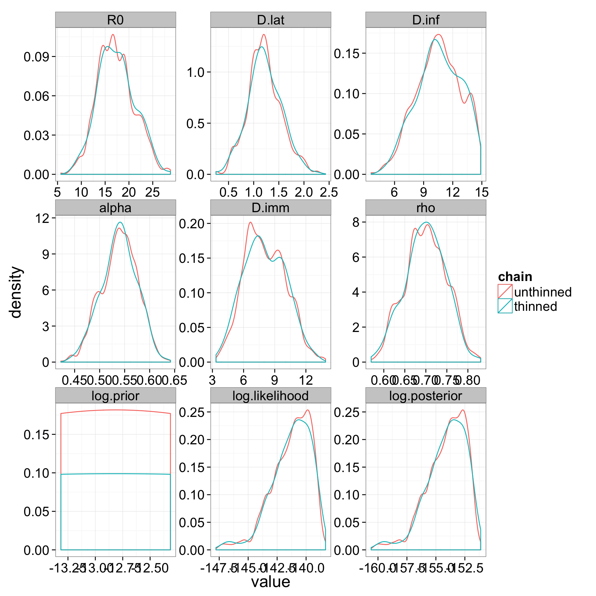 The thinned trace shows a smoother distribution despite having less samples than the unthinned one. This because the local "bumps" of the unthinned distribution are caused autocorrelated samples.
You can now go back to the practical and perform a similar analysis for a long-run MCMC.
Here is an example of analysis for our long run (\(10^5\) iterations)
# create mcmc objects for both traces
trace1 <- mcmc(mcmc_SEITL_theta1$trace)
trace2 <- mcmc(mcmc_SEITL_theta2$trace)
# combine traces as mcmc.list object
trace <- mcmc.list(list(trace1, trace2))
# let's have a look
head(trace, 3)
## [[1]]
## Markov Chain Monte Carlo (MCMC) output:
## Start = 1
## End = 4
## Thinning interval = 1
## R0 D.lat D.inf alpha D.imm rho log.prior log.likelihood
## 1 2.000 2.000 2.000 0.8000 16.00 0.8500 -12.81 -445.8
## 2 2.000 2.000 2.000 0.8000 16.00 0.8500 -12.81 -445.8
## 3 3.291 1.928 2.140 0.8244 19.15 0.8684 -12.81 -442.7
## 4 3.644 1.868 1.899 0.8099 18.47 0.8769 -12.81 -438.2
## log.posterior
## 1 -458.6
## 2 -458.6
## 3 -455.5
## 4 -451.0
##
## [[2]]
## Markov Chain Monte Carlo (MCMC) output:
## Start = 1
## End = 4
## Thinning interval = 1
## R0 D.lat D.inf alpha D.imm rho log.prior log.likelihood
## 1 20.00 2.000 2.000 0.10000 8.000 0.3000 -12.81 -321.6
## 2 20.00 2.000 2.000 0.10000 8.000 0.3000 -12.81 -321.6
## 3 18.72 2.707 1.014 0.07367 9.405 0.2469 -12.81 -320.1
## 4 18.72 2.707 1.014 0.07367 9.405 0.2469 -12.81 -320.1
## log.posterior
## 1 -334.4
## 2 -334.4
## 3 -332.9
## 4 -332.9
##
## attr(,"class")
## [1] "mcmc.list"
# acceptance rate
1 - rejectionRate(trace)
## R0 D.lat D.inf alpha D.imm
## 0.2025 0.2025 0.2025 0.2025 0.2025
## rho log.prior log.likelihood log.posterior
## 0.2025 0.0000 0.2025 0.2025
# close to the optimal value of 0.234
# ESS
effectiveSize(trace)
## R0 D.lat D.inf alpha D.imm
## 5437 6163 6093 7106 6806
## rho log.prior log.likelihood log.posterior
## 7453 0 5458 5458
# plot the traces
xyplot(trace) Note that the acceptance rate and the ESS are computed for the combined chain whereas the traces are plotted for each chains. Also, given the very high ESS we can reasonably choose a burning visually, say 5000 iterations.
Note that the acceptance rate and the ESS are computed for the combined chain whereas the traces are plotted for each chains. Also, given the very high ESS we can reasonably choose a burning visually, say 5000 iterations.
trace.burn <- burnAndThin(trace, burn = 5000)
# removing the burning increases the ESS
effectiveSize(trace.burn)
## R0 D.lat D.inf alpha D.imm
## 5858 6108 6536 6888 6543
## rho log.prior log.likelihood log.posterior
## 7164 0 5612 5612
# autocorrelation
acfplot(trace.burn)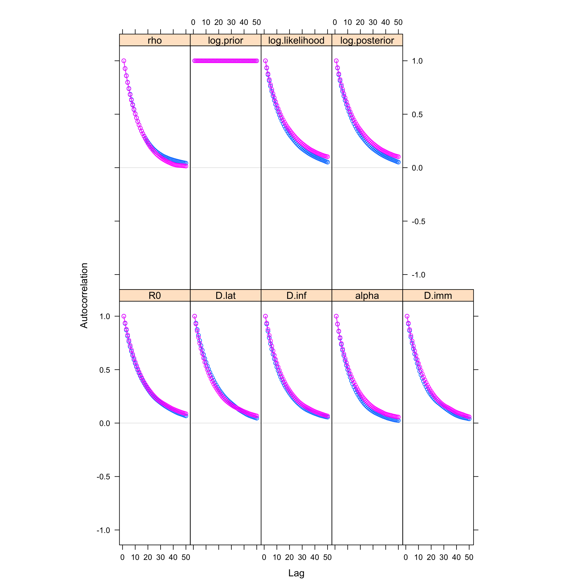
Again, given the very high ESS, we can be quite generous in our choice of the thinning.
# Thinning: let's keep 1 iteration every 40
trace.burn.thin <- burnAndThin(trace.burn, thin = 40)
xyplot(trace.burn.thin)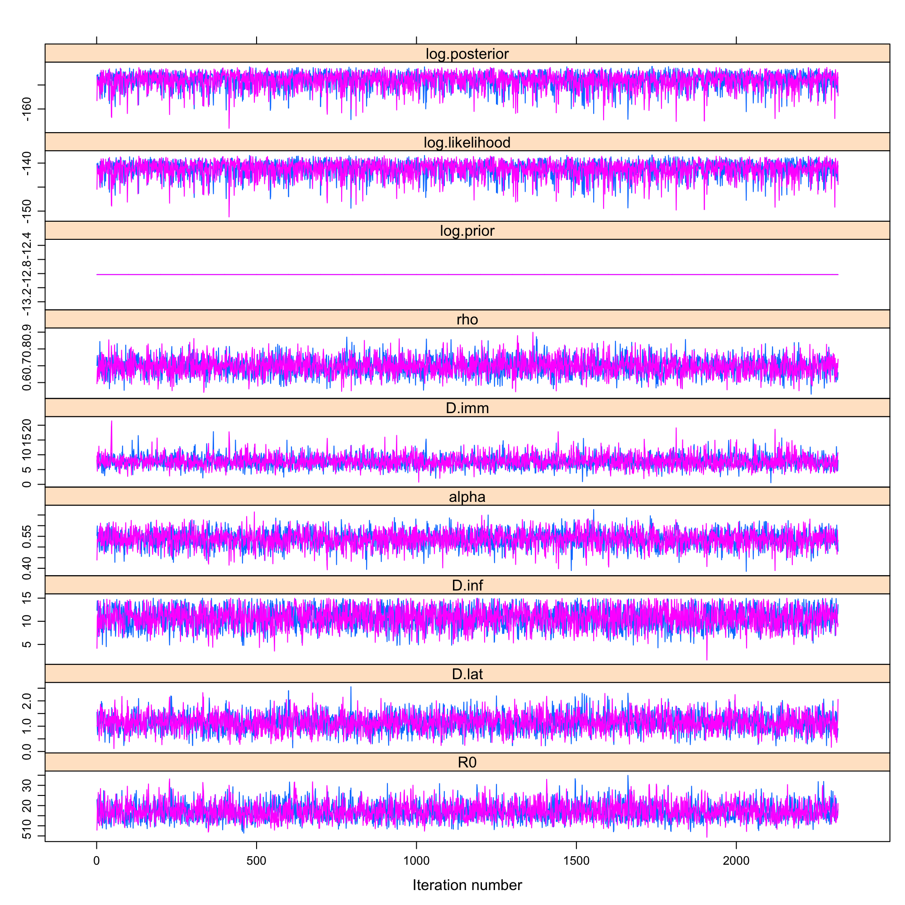 However, let's compare the thinned and unthinnned distributions.
# Note that plotPosteriorDensity can take a list of mcmc.list and will plot
# the different mcmc.list by combining their elements Let's plot the
# combined unthinned trace vs the combined thinned trace.
plotPosteriorDensity(list(unthinned = trace.burn, thinned = trace.burn.thin))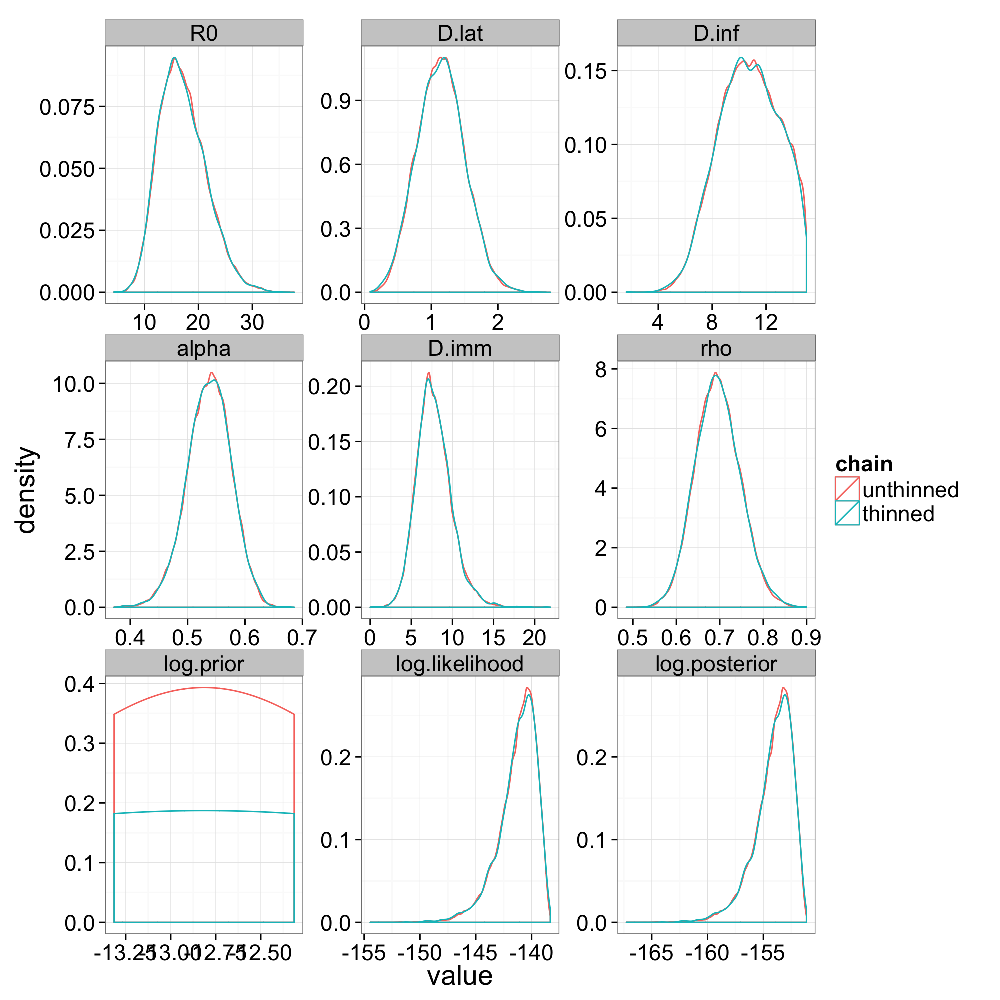
In contrast to the previous short-run, they are almost no difference between the thinned and unthinned chains. Indeed, with such a long chain, the clumpy autocorrelation has been averaged out!
In fact, there are several references that show that the longer (unthinned) chain usually yields better estimates of the true posterior than the shorter thinned chain, even for percentiles in the tail of the distribution. That said, thinning can be useful for other reasons, such as memory or time constraints in post-chain processing.
Now, we can compare whether the two independent chains, started at theta1 and theta2, have converged to the same posterior distribution
densityplot(trace.burn.thin)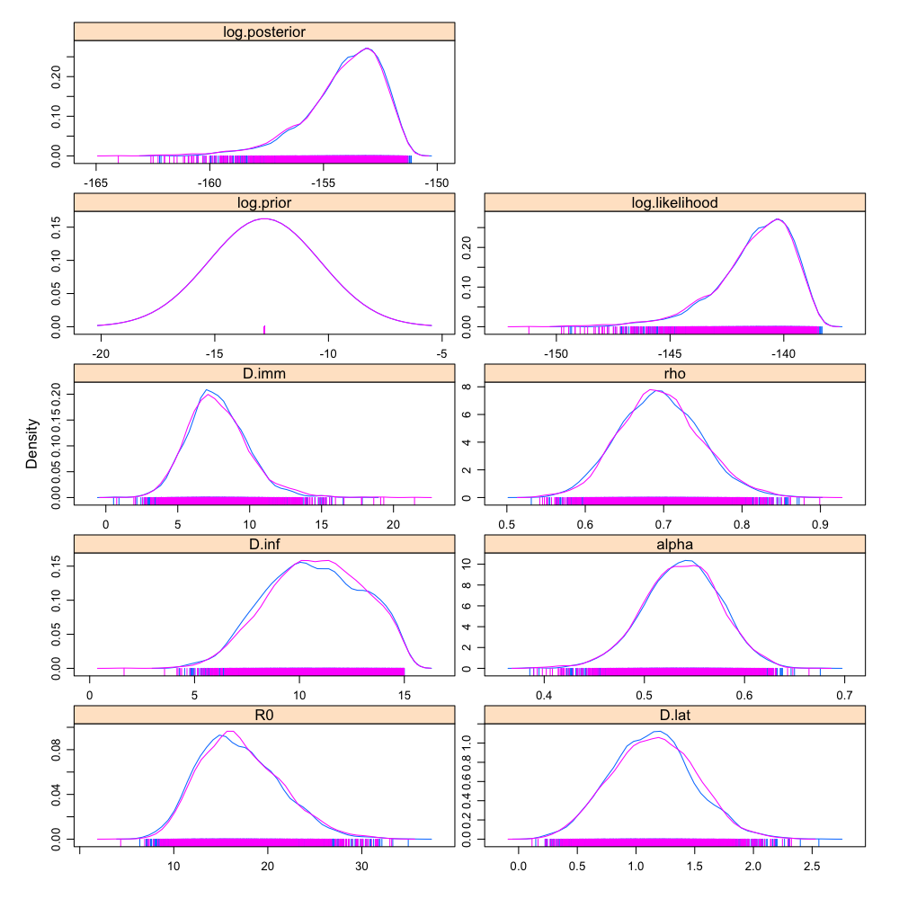 Since the chains have converged to the same posterior, we can use the combined estimates
# the function summary combines the chains of a mcmc.list
summary(trace.burn.thin)
##
## Iterations = 1:2318
## Thinning interval = 1
## Number of chains = 2
## Sample size per chain = 2318
##
## 1. Empirical mean and standard deviation for each variable,
## plus standard error of the mean:
##
## Mean SD Naive SE Time-series SE
## R0 17.091 4.3076 0.063265 0.072189
## D.lat 1.146 0.3555 0.005221 0.005790
## D.inf 10.752 2.2370 0.032855 0.034959
## alpha 0.537 0.0382 0.000561 0.000616
## D.imm 7.780 2.1159 0.031076 0.031551
## rho 0.696 0.0519 0.000762 0.000780
## log.prior -12.814 0.0000 0.000000 0.000000
## log.likelihood -141.270 1.7151 0.025190 0.028269
## log.posterior -154.085 1.7151 0.025190 0.028269
##
## 2. Quantiles for each variable:
##
## 2.5% 25% 50% 75% 97.5%
## R0 9.972 13.937 16.641 19.905 26.428
## D.lat 0.481 0.898 1.145 1.382 1.842
## D.inf 6.495 9.118 10.774 12.481 14.655
## alpha 0.459 0.512 0.539 0.563 0.610
## D.imm 4.156 6.353 7.611 9.047 12.509
## rho 0.599 0.660 0.694 0.730 0.802
## log.prior -12.814 -12.814 -12.814 -12.814 -12.814
## log.likelihood -145.566 -142.129 -140.969 -140.023 -138.893
## log.posterior -158.380 -154.943 -153.784 -152.837 -151.707Running several independent chains starting from different parts of the parameter space allows us to check whether the posterior distribution is multi-modal. If so, then we must be careful when combining the chains. For instance, an estimate of the mean computed with summary won't be meaningful for a parameter with multi-modal posterior. By contrast, for uni-modal posteriors, combining chains is an efficient way to increase the ESS and precision of the posterior estimates. Furthermore, running several "shorter" chains in parallel is faster than running one "long" chain.
Finally, let's assess the fit of the deterministic SEITL model.
# load data
data(FluTdC1971)
# the same init.state as for the fit
init.state <- c(S = 279, E = 0, I = 2, T = 3, L = 0, Inc = 0)
# by default plotPosteriorFit summarize the fit of 100 thetas sampled from
# the posterior
plotPosteriorFit(trace = trace, fitmodel = SEITL_deter, init.state = init.state,
data = FluTdC1971)
# alternatively, one can plot the fit of the mean of the posterior (in this
# case the observation is replicated 100 times)
plotPosteriorFit(trace = trace, fitmodel = SEITL_deter, init.state = init.state,
data = FluTdC1971, posterior.summary = "mean")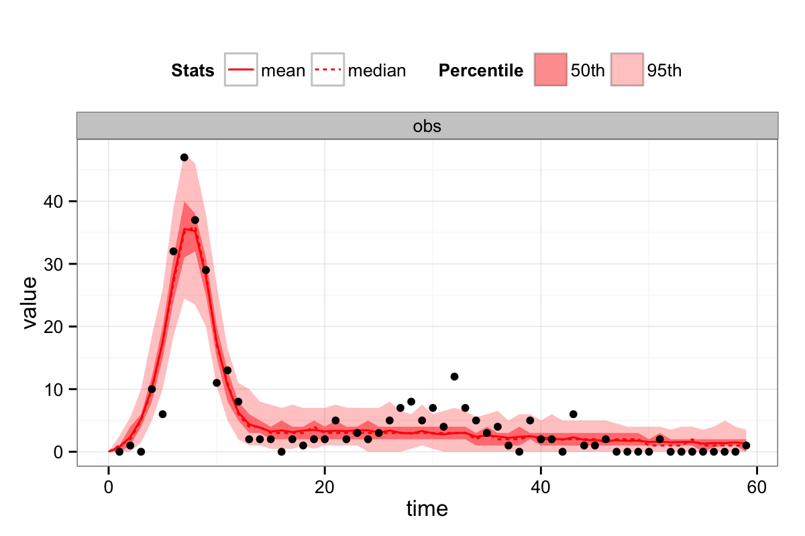
# or using the maximum a posteriori (MAP) estimate
plotPosteriorFit(trace = trace, fitmodel = SEITL_deter, init.state = init.state,
data = FluTdC1971, posterior.summary = "max")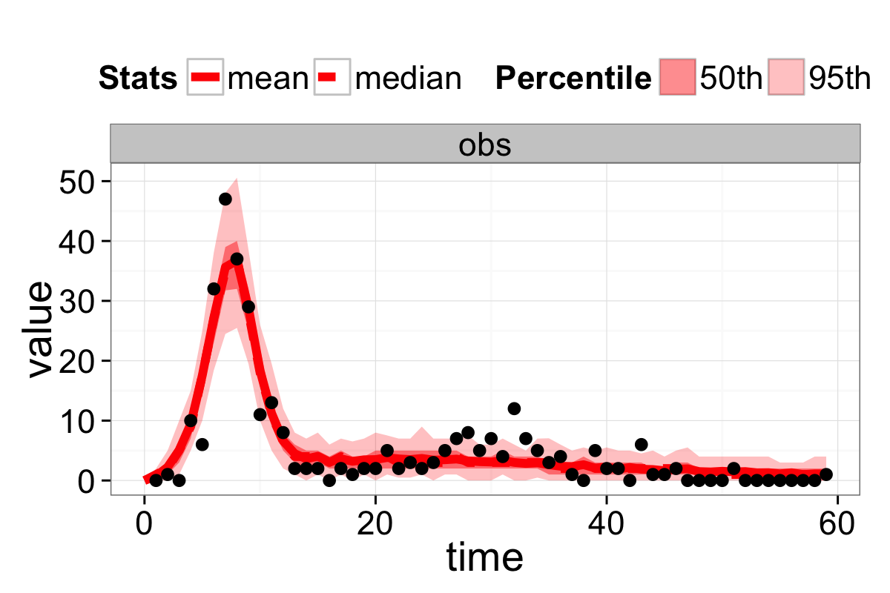
Note that the 95% credible intervals (CI) for the posterior fit under the MAP captures the highest data point. By contrast, the fit of the second peak seems quite poor, even for the MAP.
You can now go back to the practical and look at the posterior correlations between the parameters.
The correlation of the posterior distribution can be plotted with levelplot.
# levelplot doesn't accept `mcmc.list`, we pass the first `mcmc` only.
levelplot(trace.burn.thin[[1]], col.regions = heat.colors(100))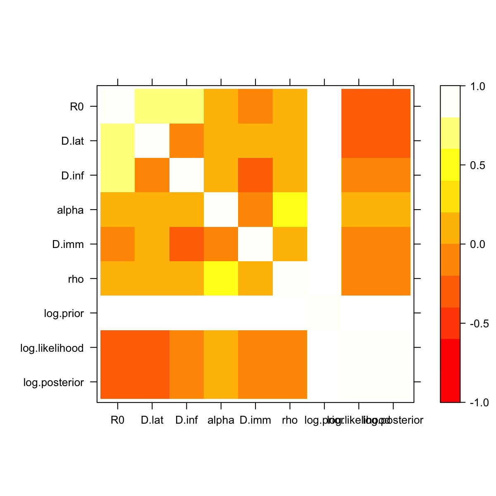
Note the strong positive correlations (~0.8) between \(R_0\) and \(D_{lat}\) and between \(R_0\) and \(D_{inf}\). In order to explain the wide 95% CIs of \(R_0\) and \(D_{inf}\), let's have a look at the contact rate \(\beta=R_0/D_{inf}\).
with(as.data.frame(trace.burn.thin[[1]]), quantile(R0/D.inf, probs = c(0.025,
0.25, 0.5, 0.75, 0.975)))
## 2.5% 25% 50% 75% 97.5%
## 1.091 1.396 1.574 1.772 2.203The posterior value of \(\beta\) doesn't show much variation. Indeed, this parameter is constrained by the shape of the initial phase of the outbreak. Conversely, there are an infinite number of combinations of \(R_0\) and \(D_{inf}\) that lead to the same \(\beta\), hence their wide 95% CIs.
Not sure this is the explanation actuallly. \(\beta\) shows similar variation as \(R_0\) and \(D_{inf}\). Maybe this is just because of the hight attack rate, i.e. once \(R_0>5\) it doesn't make any difference whether it is 10 or 20.
We can also note that the posterior estimate of \(D_{inf}=11\) days (95% CI: \([6-15]\)) is biologically unrealistic based on previous empirical estimates. However, our approach did not include any prior information as by default the SEITL_deter fitmodel comes with uniform priors for all parameters.
In order to include previous empirical information on \(D_{lat}\) and \(D_{inf}\), let's modify the logPrior of SEITL_deter as follows:
SEITL_deter$logPrior <- function(theta) {
# package with truncated normal distribution
require(truncnorm)
log.prior.R0 <- dunif(theta[["R0"]], min = 1, max = 50, log = TRUE)
# normal distribution with mean = 2 and sd = 1 and truncated at 0
log.prior.latent.period <- log(dtruncnorm(theta[["D.lat"]], a = 0, b = Inf,
mean = 2, sd = 1))
# normal distribution with mean = 2 and sd = 1 and truncated at 0
log.prior.infectious.period <- log(dtruncnorm(theta[["D.inf"]], a = 0, b = Inf,
mean = 2, sd = 1))
log.prior.temporary.immune.period <- dunif(theta[["D.imm"]], min = 0, max = 50,
log = TRUE)
log.prior.probability.long.term.immunity <- dunif(theta[["alpha"]], min = 0,
max = 1, log = TRUE)
log.prior.reporting.rate <- dunif(theta[["rho"]], min = 0, max = 1, log = TRUE)
return(log.prior.R0 + log.prior.latent.period + log.prior.infectious.period +
log.prior.temporary.immune.period + log.prior.probability.long.term.immunity +
log.prior.reporting.rate)
}Note the choice of a truncated normal distribution since \(D_{lat}\) and \(D_{inf}\) must be positive.
You can now go back to the practical and run a MCMC with this informative prior.
Here we combine both chains with informative priors and compare the posterior distribution with the one above.
# create mcmc object
trace.info1 <- mcmc(mcmc_SEITL_infoPrior_theta1$trace)
trace.info2 <- mcmc(mcmc_SEITL_infoPrior_theta2$trace)
# combine in a mcmc.list
trace.info <- mcmc.list(trace.info1, trace.info2)
# burn and thin as the chain with uniform prior (see above sections)
trace.info.burn.thin <- burnAndThin(trace.info, burn = 5000, thin = 40)
# check that both chains converged to the same posterior
plotPosteriorDensity(trace.info.burn.thin)
# compare the effect of informative priors on the posterior distribution
plotPosteriorDensity(list(unif = trace.burn.thin, info = trace.info.burn.thin))
\(R_0\) and \(D_{inf}\) have very different posterior. This is expected since there is an informative prior on \(D_{inf}\) and \(R_0\) is strongly correlated to \(D_{inf}\). Note also that the mode of all other parameters have changed, though less than \(D_{inf}\) and \(R_0\). This illustrate the influence that one prior can have on the full posterior distribution.
You can now go back to the practical for the final exercise of the session.
# combine the two chains in a data frame
trace.combined <- ldply(trace.info.burn.thin)
# take the mean of theta
theta.bar <- colMeans(trace.combined[SEIT2L_deter$theta.names])
print(theta.bar)
## R0 D.lat D.inf alpha D.imm rho
## 7.6251 1.2904 3.6665 0.4751 9.1354 0.6469
# compute its log-likelihood
init.state <- c(S = 279, E = 0, I = 2, T = 3, L = 0, Inc = 0)
log.like.theta.bar <- trajLogLike(SEITL_deter, theta.bar, init.state, data = FluTdC1971)
print(log.like.theta.bar)
## [1] -142.8
# and its deviance
D.theta.bar <- -2 * log.like.theta.bar
print(D.theta.bar)
## [1] 285.7
# the effective number of parameters
p.D <- var(-2 * trace.combined$log.likelihood)/2
print(p.D)
## [1] 8.117
# and finally the DIC
DIC <- D.theta.bar + 2 * p.D
print(DIC)
## [1] 301.9Follow this link to go back to the practical.